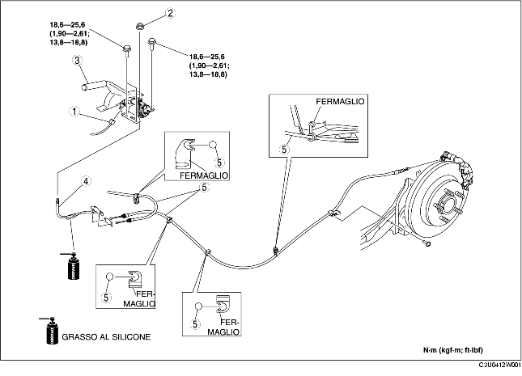

1. Rimuovere il silenziatore principale. (Vedere RIMOZIONE/INSTALLAZIONE SISTEMA DI SCARICO [ZJ, Z6]). (Vedere RIMOZIONE/INSTALLAZIONE SISTEMA DI SCARICO [LF].)
2. Rimuovere l'isolatore termico.
3. Rimuovere la consolle. (Vedere RIMOZIONE/INSTALLAZIONE CONSOLLE).
4. Rimuovere nell'ordine indicato in tabella.
5. Installare in ordine inverso rispetto alla rimozione.
6. Dopo l'installazione, ispezionare la corsa della leva del freno di stazionamento. (Vedere ISPEZIONE LEVA FRENO DI STAZIONAMENTO).

.
|
1
|
Connettore interruttore freno di stazionamento
|
|
2
|
Dado di regolazione
|
|
3
|
Leva freno di stazionamento
|
|
4
|
Cavo anteriore freno di stazionamento
|
|
5
|
Cavo posteriore freno di stazionamento
|
1. Passare il cavo del freno di stazionamento posteriore all'interno del cablaggio sensore velocità ruota ABS come mostrato in figura.
2. Installare il cavo del freno di stazionamento posteriore.
1. Installare il cavo del freno di stazionamento anteriore con il riferimento sull'equilibratore rivolto verso il basso.